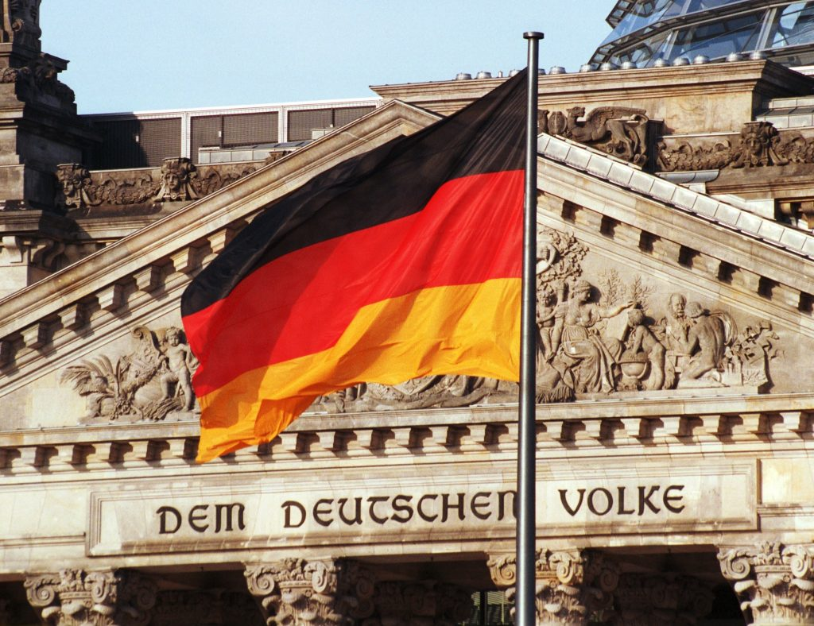

Politica De Alemania
Alemania, una república federal con 16 estados federados, se define por un sistema político complejo y federalista. Su democracia parlamentaria se articula a través del Bundestag (cámara baja) y el Bundesrat (cámara alta), donde los partidos políticos tejen alianzas para formar coaliciones de gobierno.
En la actualidad, la política alemana se encuentra en un momento crucial. La guerra en Ucrania ha impactado profundamente la política exterior y la economía del país, mientras que la recuperación del COVID-19 exige un enfoque en la economía y la salud pública. A esto se suma el ascenso de la derecha, un desafío para el sistema político tradicional. Su actual presidente es Frank-Walter Steinmeier
El futuro de la política alemana dependerá en gran medida de cómo se aborden estos desafíos. La redefinición del rol de Alemania en la Unión Europea, el posicionamiento frente a Rusia y el enfoque en los desafíos económicos y sociales como el crecimiento, la desigualdad y el cambio climático serán temas clave en los próximos años.
Más allá de los titulares, la clave para comprender la política alemana reside en el consenso y el compromiso, valores fundamentales que impregnan su sistema político. El diálogo y la colaboración entre diferentes actores son esenciales para navegar por la compleja danza de la política en este país.
